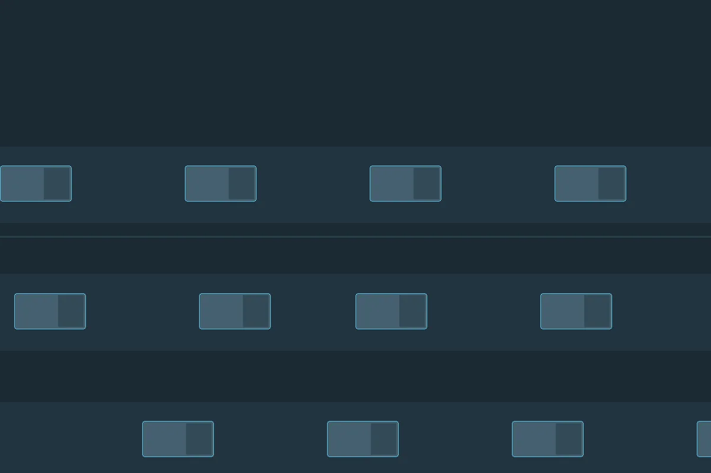

Transport og logistikk
Effektive transport- og logistikkløsninger.
Med kompetanse i alle ledd gir Nortransport kundene løsninger av høy kvalitet – innen landbruk, anlegg, gods, renovasjon og import/eksport.
GodsAnleggRenovasjon
01 — Produkter og tjenester
Det vi frakter
Seks områder, med egne folk og utstyr.

02 — Kvalitet og miljø
Kvalitet og miljø i alle ledd
Vi jobber med kvalitet og miljø gjennom hele leveransen, og har egne sider for drivstofftillegg, kundeportal og reklamasjon.
- Kvalitet – egne rutiner.
- Miljø – eget arbeid.
- Kundeportal – følg oppdragene.
03 — Slik jobber vi
Fire steg
Fra forespørsel til levering.
- Forespørsel
Hva skal fraktes, hvorfra og hvorhen.
- Plan
Rute, utstyr og tid.
- Transport
Vi kjører, med oppfølging.
- Levering
Kvittering og dokumentasjon.
Trenger du transport eller logistikk?
Ta kontakt, så finner vi en løsning som passer varene og ruten.